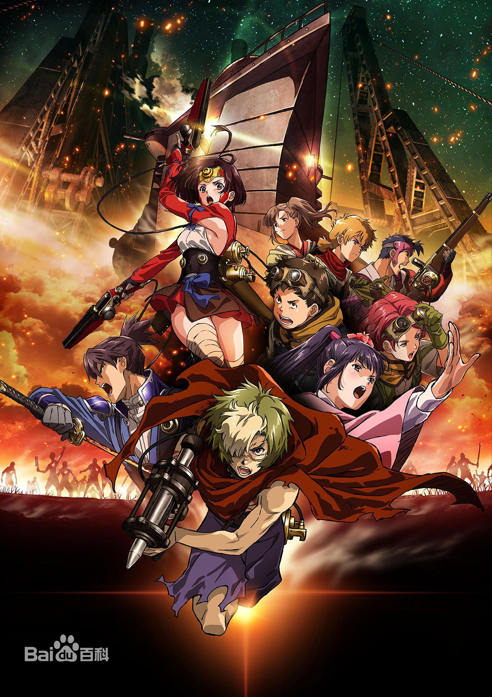
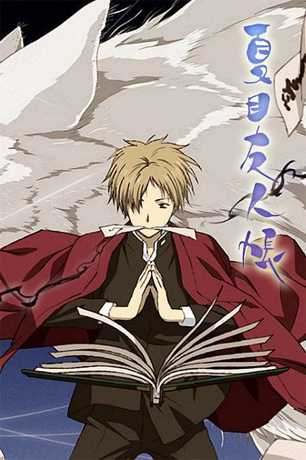
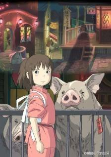

动漫推荐
甲铁城的卡巴内瑞

一种名为“卡巴内”的钢铁怪物忽然出现在人类社会之中，造成了巨大的恐慌。被它们袭击过的人类，会拥有起死回生之能力，并且亦开始袭击同类。在怪物猛烈的进攻之下，人类社会很快就四分五裂，幸存下来的人们建立起了城寨“驿”，靠着彼此互通有无苟且残存。驿与驿之间，唯一能够通行的交通工具是装甲蒸汽机车。
生驹（畠中祐 配音）是一名以蒸汽锻冶为业的热血少年，他发明了武器“贯筒”，希望能够为消灭卡巴内贡献出自己的力量。一次偶然中，生驹邂逅了神秘的少女（千本木彩花 配音），与此同时，一场暴走事件的发生使得生驹所生活的显金驿彻底沦陷，卡巴内不断的产生着，生驹并没有选择逃跑，而是拿起武器，挺身而出。
航海王

拥有财富、名声、权力，这世界上的一切的男人 “海贼王”哥尔·D·罗杰，在被行刑受死之前说了一句话，让全世界的人都涌向了大海。“想要我的宝藏吗？如果想要的话，那就到海上去找吧，我全部都放在那里。”，世界开始迎接“大海贼时代”的来临 [10] 。
时值“大海贼时代”，为了寻找传说中海贼王罗杰所留下的大秘宝“ONE PIECE”，无数海贼扬起旗帜，互相争斗。有一个梦想成为海贼王的少年叫路飞，他因误食“恶魔果实”而成为了橡皮人，在获得超人能力的同时付出了一辈子无法游泳的代价。十年后，路飞为实现与因救他而断臂的香克斯的约定而出海，他在旅途中不断寻找志同道合的伙伴，开始了以成为海贼王为目标的冒险旅程
夏目友人帐

每天在人与妖怪之间过着忙碌日子的夏目，偶然与过去的同学・结城重逢了，以此想起了于妖怪有关的苦涩记忆。此时，夏目认识了在归还名字的妖怪记忆中出现的女性·津村容莉枝。知晓玲子的她，现在和独子椋雄一起平静地生活着。夏目通过和他们交流，心里也变得平静下来。但是这对母子所居住的城镇，似乎潜藏着神秘的妖怪。在调查此事回来的路上，寄生于猫咪老师身体上的“妖之种”，在藤原家的庭院中，一夜之间就长成树结出果实。不知为什么，吃掉了与自己形状相似果实的猫咪老师，竟然分裂成了3个？
千与千寻

10岁的少女千寻与父母一起从都市搬家到了乡下。没想到在搬家的途中，一家人发生了意外。他们进入了汤屋老板魔女控制的奇特世界——在那里不劳动的人将会被变成动物。千寻的爸爸妈妈因贪吃变成了猪，千寻为了救爸爸妈妈经历了很多磨难，在期间她遇见了白龙，一个既聪明又冷酷的少年，在经历了很多事情之后，千寻最后救出了爸爸妈妈，拯救了白龙
你的名字
故事发生的地点是在每千年回归一次的彗星造访过一个月之前，
日本飞驒市的乡下小镇糸守町。在这里女高中生三叶每天都过着忧郁的生活，而她烦恼的不光有担任镇长的父亲所举行的选举运动，还有家传神社的古老习俗。在这个小小的城镇，周围都只是些爱瞎操心的老人。为此三叶对于大都市充满了憧憬。
然而某一天，自己做了一个变成男孩子的梦。这里有着陌生的房间、陌生的朋友。而眼前出现的则是东京的街道。三叶虽然感到困惑，但是能够来到朝思暮想的都市生活，让她觉得神清气爽。另一方面在东京生活的男高中生立花泷也做了个奇怪的梦，他在一个从未去过的深山小镇中，变成了女高中生。两人就这样在梦中邂逅了彼此。
温州大学瓯江学院数信学院18电商一班
周明凤
有问题请及时联系。
QQ:2011827071